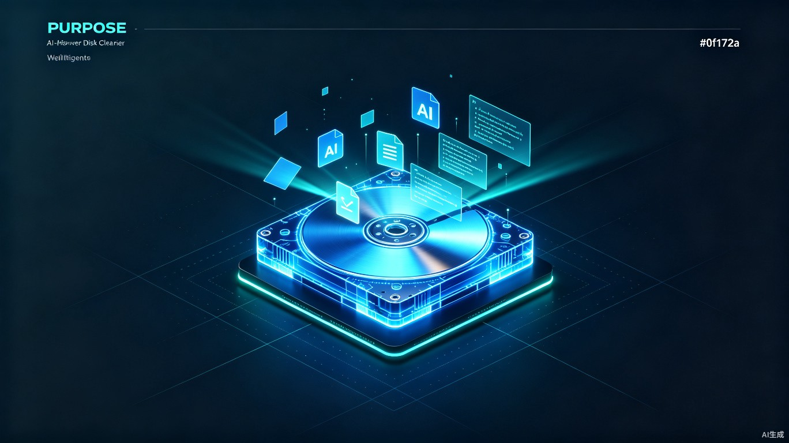
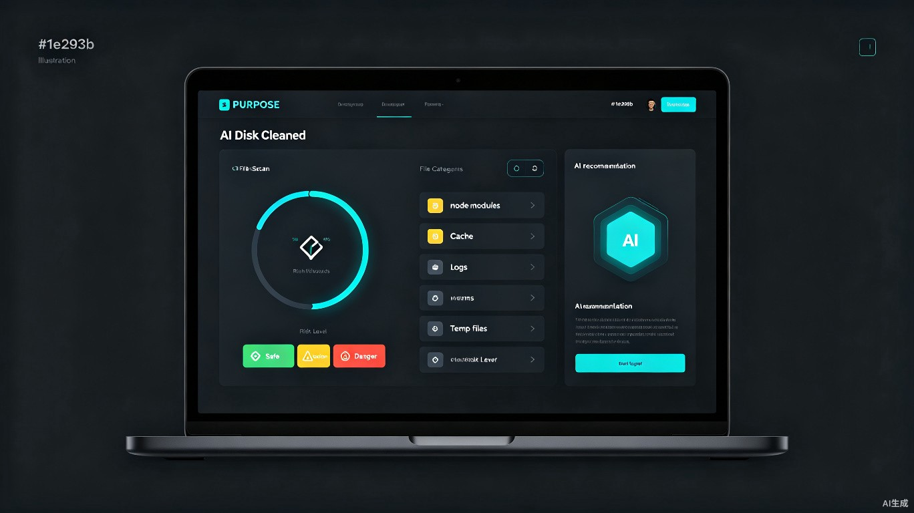

结合本地扫描、AI语义识别与智能风险评估，让磁盘清理从"盲目删除"升级为"科学决策"。一键释放空间，零误删风险。
解决开发者和重度电脑用户面临的磁盘空间管理难题
AI深入理解文件用途，自动识别构建产物、缓存、日志、临时文件等，无需用户手动判断。
基于AI分析结果，将文件标记为安全删除、谨慎处理或禁止删除，杜绝误删风险。
根据AI建议自动生成清理方案，用户一键确认即可执行，支持预览和撤销操作。
支持 Windows、macOS 和 Linux 三大平台，适配不同开发环境的目录结构与文件类型。
精准定位开发者与重度电脑用户的核心需求
普通清理工具无法理解业务语义，node_modules、.gradle等目录不敢轻易删除
逐个目录检查耗时耗力，且容易误删重要配置文件或项目依赖
现有工具规则固定，无法适配不同技术栈和自定义项目结构
传统工具直接列出文件，缺乏"能否删除"的智能判断和风险提示
从扫描到清理的完整智能工作流
AI自动识别项目目录结构，标注各文件夹类型与可清理性。点击文件夹展开/收起查看详情。
基于文件内容、路径特征和使用频率的多维度AI评估模型
已确认的可重建文件或临时数据
可能包含有用信息，建议预览后删除
系统关键文件或不可恢复的数据
自动检测主流技术栈的依赖目录与缓存，提供针对性清理建议
npm / yarn / pnpm
Maven / Gradle / SBT
pip / conda / poetry
体验从扫描到清理完成的完整流程
AI已为您筛选出可安全清理的文件，勾选后点击"开始清理"
本地扫描引擎 + AI语义分析 + 智能决策的完整技术栈
flowchart TB
subgraph 用户层["用户层"]
UI[桌面端界面
Windows/Mac/Linux]
CLI[命令行工具]
end
subgraph 核心引擎["核心清理引擎"]
SCAN[本地文件扫描器]
AI[AI语义分析模块]
RISK[风险评估引擎]
CLEAN[清理执行器]
end
subgraph 数据层["数据与规则层"]
RULE[本地规则库]
CACHE[扫描缓存]
LOG[操作日志]
end
UI --> SCAN
CLI --> SCAN
SCAN --> AI
AI --> RISK
RISK --> CLEAN
RULE --> AI
RULE --> RISK
SCAN --> CACHE
CLEAN --> LOG
CLEAN --> UI
从个人工具到开发者生态的演进路径
基础磁盘扫描与AI识别功能，积累种子用户
高级规则库、定时清理、IDE插件集成
团队共享清理策略、集中管理、合规审计
私有化部署、自定义AI模型、SSO集成
基于TRAE Work生成的AI磁盘清理工具概念界面
